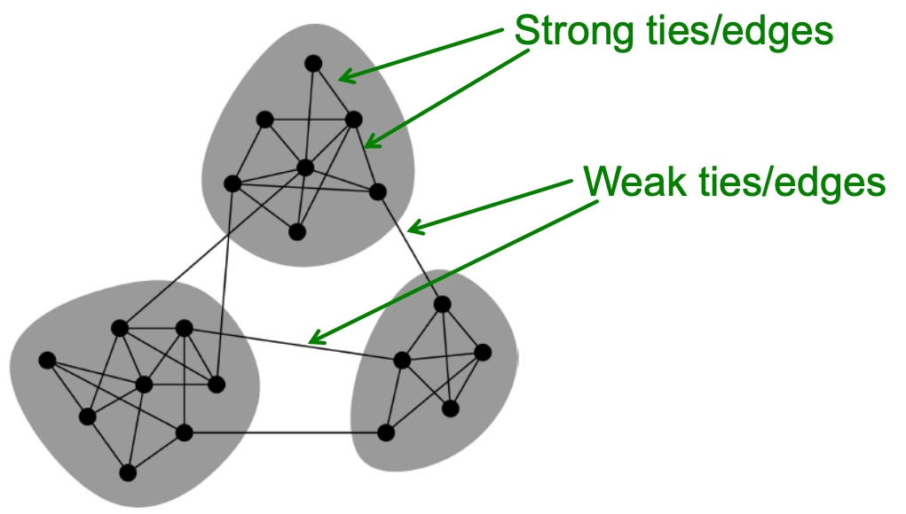
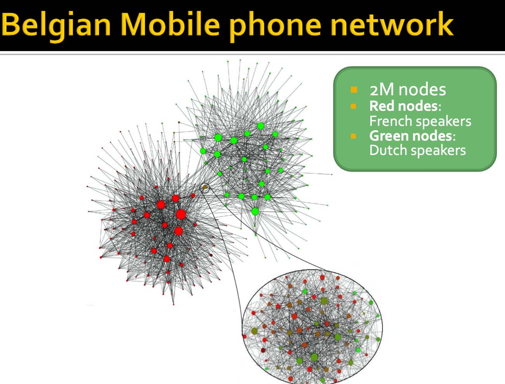
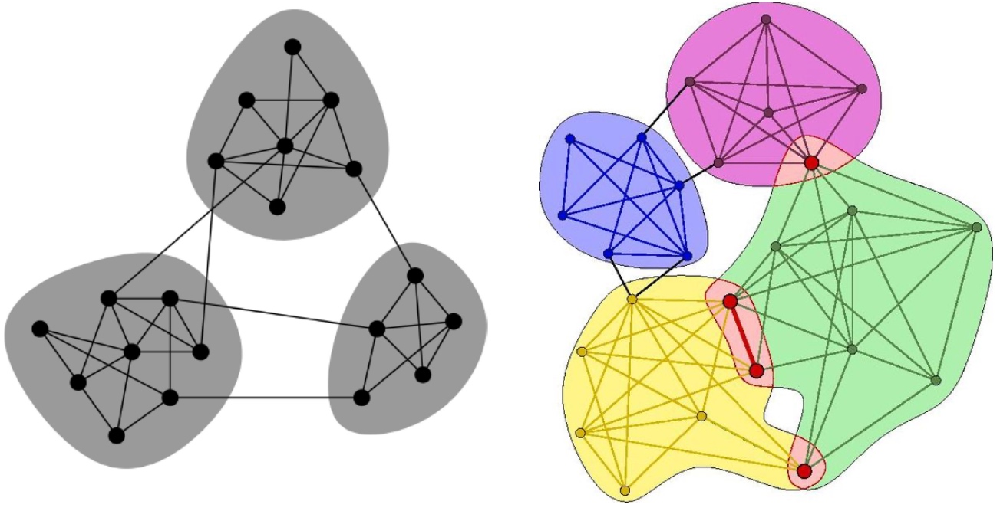
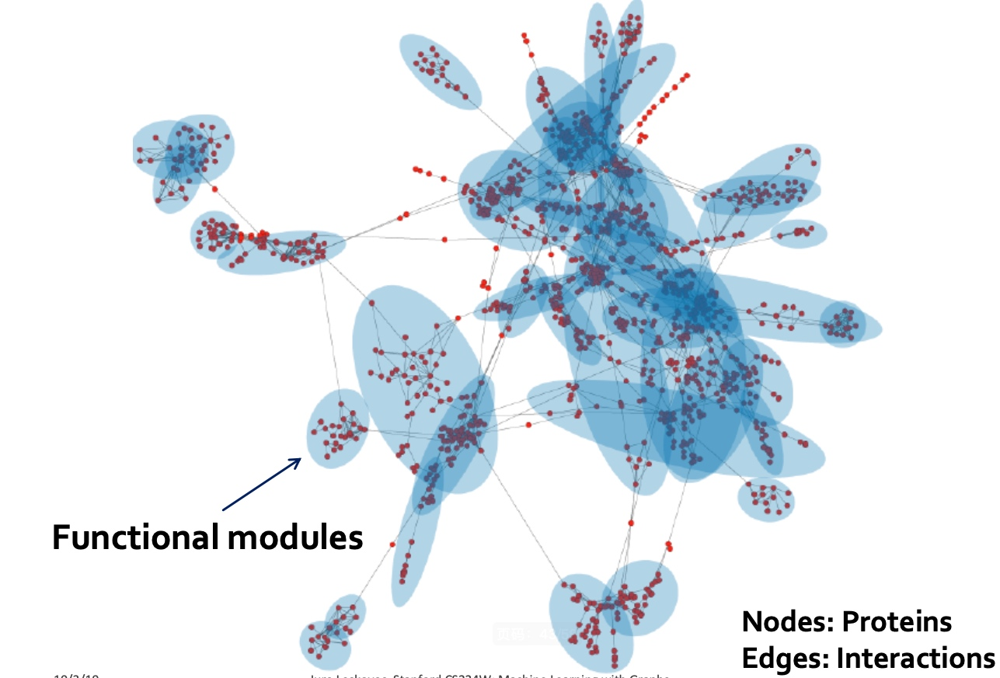
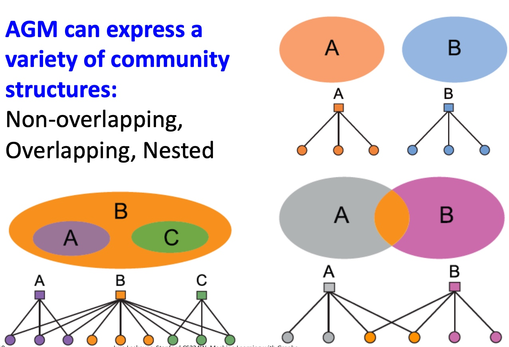

Granovetter's theory
马克·格兰诺维特（Mark Granovetter，1943年10月20日－），美国社会学家，斯坦福大学教授。格兰诺维特是论文被引用最多的学者之一，根据 Web of Science 的数据，社会学论文被引数排名第一和第三的文章皆出自格兰诺维特之手。格兰诺维特因为对社会网络和经济社会学的研究而成名。其最著名成就是1974年提出的弱连接理论：与自己频繁接触的亲朋好友之间是一种“强连接”，通过这种连接获取到的往往是同质性的信息；但社会上更为广泛的是一种并不深入的人际关系，这种弱关系能够使个体获得通过强关系无法获取到的信息，从而在工作和事业上、在信息的扩散上起到决定作用。

格兰诺维特的研究认为如果两个人之间有共同的朋友，那他们成为朋友的可能性较大。
格兰诺维特的研究也在真实的数据上得到了验证
Edge Overlap
简单解释下，Edge Overlap表示两个节点的邻居节点的重合程度（本身节点不在计算范围内），下图中右边部分右上图， \(N(i)=4, N(j)=4\)， 去除本身i, j 所以\(N(i) \cup N(j) = 6\), \(N(i) \cap N(j) = 2\)， 所以\(O_{ij}=1/3\)

Edge Overlap被用来当做节点间链接的强弱的一种度量，通过在实际数据集（欧洲通话网络数据集得到验证）， 在实际数据中，具有高边重叠的边，确实是有着强连接关系的， 这里的强连接关系即用节点间通话次数来表示关系强弱；
社区内强连接，社区间弱连接
上面的研究表明，在图中确实会存在紧密连接的社群概念，社群内的链接基本是强连接， 而社群间的连接是弱连接，强链接偏向将信息流锁紧在社群内部，而边缘连接由于涉及到多个社群之间，在信息传播上更有优势

网络社群的基本概念
网络中的社群的基础定义：紧密连接的节点集合，这些节点间有较多的内部连接，而相对较少的外部连接；
Zachary空手道俱乐部一个在图这块入门级的数据集，用来展示图网络中基本的问题如节点分类、社区发现等等；
如下图， 仅靠图的结构化关系，可以比较合理地将俱乐部进行切分，即规划至各自的社群：

另一个例子是NCAA FootBall Network：

如何寻找网络中的社群？
Modularity Q用来衡量网络中社群划分的指标， 其基础含义如下：
\[Q \Rightarrow \sum_{s \in S}[(\#\ edges\ within\ group\ s) - (expected\ \#\ edges\ with\ in\ group\ s) ] \]其中\((expected\ \#\ edges\ with\ in\ group\ s)\)需要构建null model（之前的学习笔记有提到过Configuration Model， 忘记了的小伙伴可以翻一下）， 保证相同的degree distribution且连接概率为均匀随机， 假定两个节点i、j，其度分别为\(k_i, k_j\)，那么节点间边的期望为\(p(i,j)= \frac{k_{i}k_{j}}{2m}\)，所以这个图里面所有边的期望为：
\[E_{edge}=0.5 \sum_{i \in N} \sum_{j \in N} \frac{k_{i}k_{j}}{2m}= 0.5 * \frac{1}{2m}\sum_{i \in N}k_{i}(\sum_{j \in N} k_{j})=\frac{1}{4m}* 2m*2m = m \]所以Modularity Q从：
\[Q \Rightarrow \sum_{s \in S}[(\#\ edges\ within\ group\ s) - (expected\ \#\ edges\ with\ in\ group\ s) ] \]表示为：
\[Q(G, S) = \frac{1}{2m}\sum_{s \in S}\sum_{i \in s}\sum_{j \in s}(A_{ij}-\frac{k_{i}k_{j}}{2m}) = \frac{1}{2m}\sum_{ij}[A_{ij}-\frac{k_{i}k_{j}}{2m}]\delta(c_i, c_j) \]其\(A_{ij}\ =\ 1\ if\ i->j\ 0\ otherwise, \delta(c_i, c_j)=1\ if\ c_i = c_j\ 0\ otherwise\)
Q值域为[-1, 1], 正值表示社群内的边多于期望， 当Q为0.3-0.7之间表明有显著的社群结构；
Louvain Algorithm
Louvain Algorithm是一个最大化Modularity Q的贪心算法，主要由两步构成：
过程1：Partitioning
- 初始化的时候给所有节点分配一个单独的社区；
- 针对每一个节点i，进行以下步骤：
- 计算改几点被划分到其邻居节点j所在的社群，并且计算该社群的modularity delta；
- 将节点i移入至最好modularity delta的社群；
- 迭代，直到modularity delta不再增加；
其中modularity delta \(\Delta Q\)， 应该包括\(\Delta (i->C)\)(将节点i移入community C增加的Q值)与\(\Delta(D->i)\)（将节点i溢出Community D）， 因为\(\\Delta(D->i)\)， 在步骤1中都一样， 所以\(\Delta Q\)公式主要依赖于\(\Delta (i->C)\)， 如下：
\[\Delta Q(i ->C)[\frac{\sum_{in} { k_{i, in}}}{2m} - (\frac{\sum_{tot}+k_i}{2m})^2] - [\frac{\sum_{in}}{2m} - (\frac{\sum_{tot}}{2m})^2 - (\frac{k_i}{2m})^2] \]其中：
\(\sum_{in}\) 表示社群内节点之间的边权重和（社群内边）；
\(\sum_{tot}\) 表示社群中节点所有的边的边权重和（社群内边与社群外边均考虑）；
\(k_{i, in}\) 表示社群中节点i与其他节点的边权重和；
\(k_i\) 表示节点i连接的所有边的权重和；
过程2： Restructuring
经过第一步之后， 会出现很多超级节点，这些超级节点间所在的社群间如果有任意的边连接，那么我们要连接超级节点， 超级节点间的边的权重等于他们相应地社群间所有边权重的和；
具体的伪代码如图，逻辑还是相对比较简单的：

回顾与真实数据展示
每一个pass 包含：partitioning和restructuring 两个部分， 如下，迭代直到收敛：

真实数据集上的一个例子：

检测有重叠的社群算法：BigCLAM
何谓有重叠的社群？
无重叠的社群与有重叠的社群

很多实际数据集中，存在有重叠的社群：
facebook的Ego-Network

PPI

BigCLAM
BigCLAM主要步骤如下：
- 基于节点所属的社群，构造一个图生成模型，构造方法为AGM(Community Affiliation Graph Model)；
- 根据我们实际的图G，假设它是用AGM生成的。寻找一个最优的AGM，能产生我们实际的图G， 通过这个AGM，确定每个节点所属的社区
Community Affiliation Graph Model
如下图， 左边部分主要包括节点V， 社群C， 从属关系，其中每一个社群的概率为\(p_c\)：
- 社群c内的节点，彼此连接形成边的概率是\(p_c\);
- 对于从属与多个社群的节点，如果其在一个社群内没有连接， 其边在另外社群的连接也是可能存在的；

AGM可以生成多种不同的社群结构，如Non-overlapping, Overlapping, Nested：

Detecting Communities with AGM
使用AGM来做社群发现就转换成一个给定graph G， 如何反推AGM的各个参数F：Affiliation Graph M， 社群个数C，以及社群内连接概率\(p_c\)
给定G和F， 计算器似然函数:
\[P(G|F)=\prod_{(u,v) \in G}P(u, v)\prod_{(u,v) \not \in G}(1-p(u,v)) \]上式中前一个连乘表示图当中所有的边的似然函数，后一个表示不在该graph边集合的似然。
考虑到每个节点属于各个社区的权重是不同的， 向量\(F_u\)表示节点u属于各个社群的权重，加上log转换， 所以log似然函数为：
这里和lr的梯度下降很类似，其实就是一样，只需要用梯度下降公司待进去自然就可以算出收敛是的F的参数；
有了F之后， 我们的节点从属社群关系就极其明显了。
总结
今天，课程上主要讲解的是graph中社群的概念，通过Granovetter's theory和真实数据的对比，验证了图当中的强弱连接，从而引出社群概念，然后介绍了一种简单的社群发现算法Louvain Algorithm，通过最大化Modularity Q来保证节点与社群的从属， 最后提供可重叠的社群发现，提出BigCLAM算法，通过最大化log似然函数优化AGM生成对应真实Graph，来得到AGM， 从而得到包括社群从属关系在内的各个参数，从而识别节点从属；